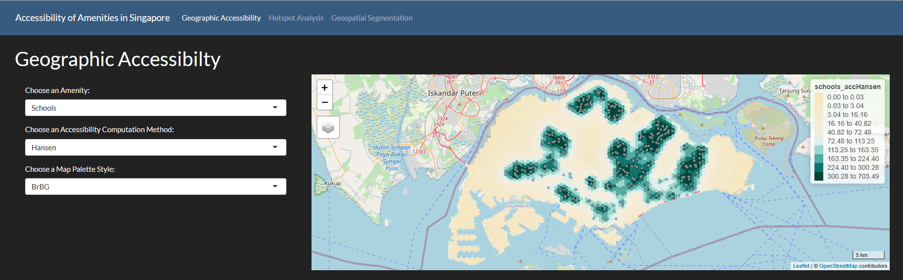
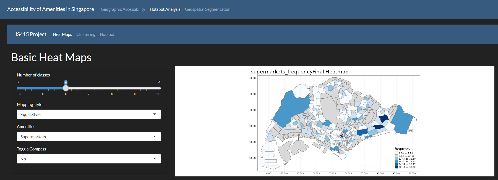
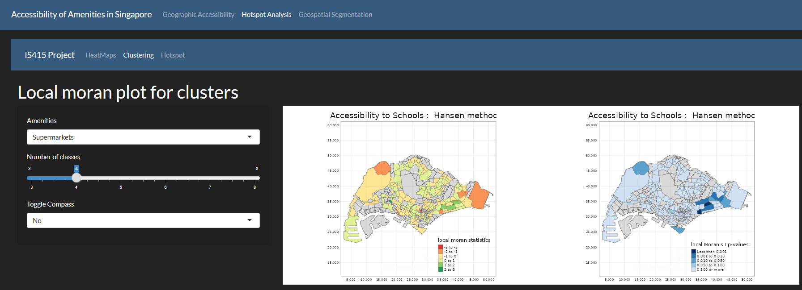
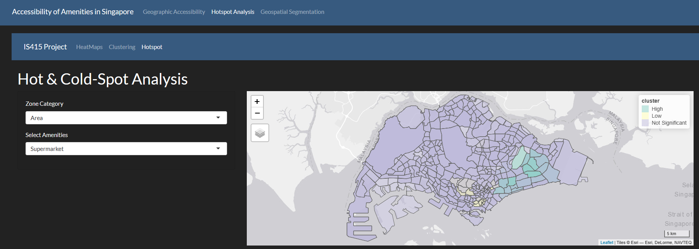
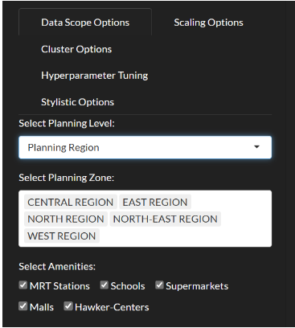
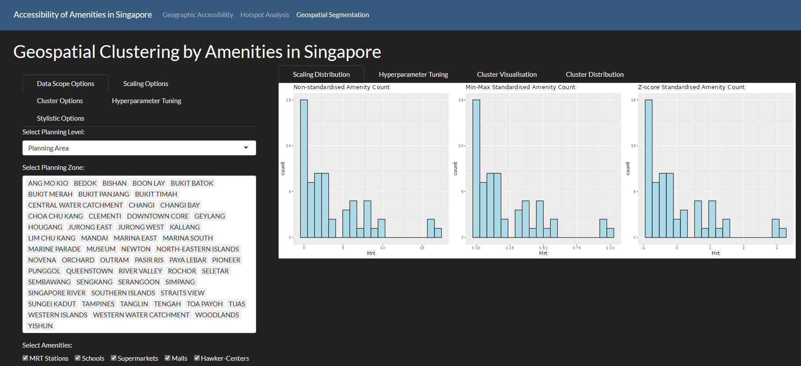
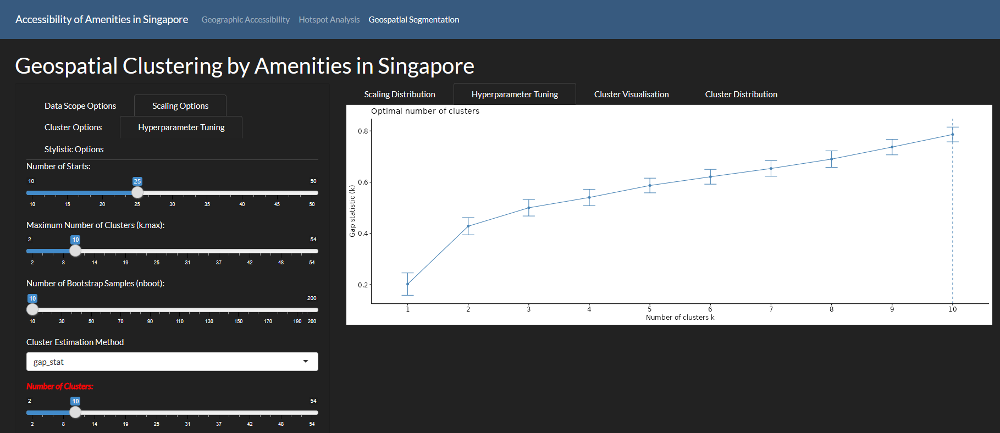
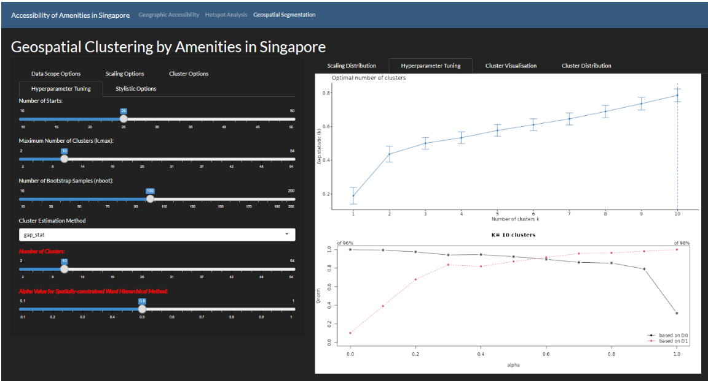
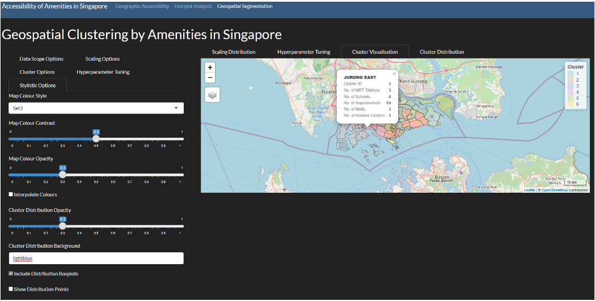
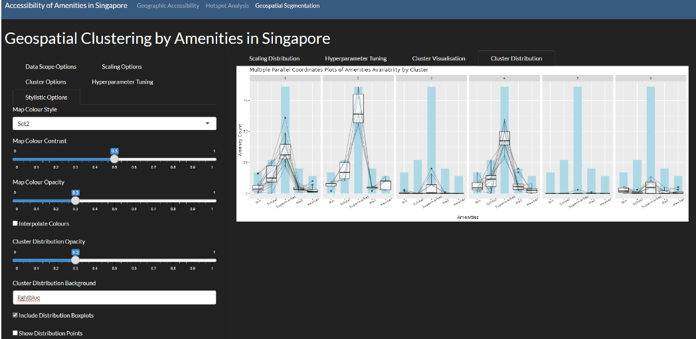

User Guide
User guide
User guide for group 12’s amenities data analysis tool.
Geographic Accessibility

In this page, you can view the Accessibility map of each amenity type. You can filter the map by amenity type, accessibility computation method and map palette style. When hovering over the map, you can see the details of that specific amenity location, or the accessibility value of the hexagon. Try changing the palette style around to Best match your visual preference.
Hotspot Analysis - HeatMaps

In the HeatMaps tab, users would be presented a map of Singapore which gives them a brief overview of the amenities frequency in Singapore. This map will indicate areas with different concentrations of amenities and the concentration will be represented by the color tones. With a brief glance, users can see higher concentration areas of the different amenities and users have the ability to filter between the number of clusters they want, mapping styles, the different amenities and also other map design options.
Hotspot Analysis - Clustering

Next, the Local moran plots under clustering, presents users a view of spatial autocorrelation in Singapore between the different amenities. This map will identify clusters by treating individual subzones as an independent entity to compare with its neighbors. If the entity itself and its neighbors have values that indicate high moran values, that indicates a cluster which is highlighted in green on the map. This is further supported by the p values on the right map, indicating the significance of clusters. The different filters that a user can use are filter by amenities, number of classes for local moran, and also map design options.
Hotspot Analysis - Hotspots

Lastly, we have the hotspot analysis tab where the user is presented with an interactive map of Singapore where they can mouse over to see the regions which are considered hotspots, coldspots and not significant. Unlike local moran, hotspot analysis analyzes the regions as a whole rather than comparing entities independently to derive hotspots and coldspots. Users can filter by zones and the different amenities for their visualization.
Geospatial Segmentation - Data Scope Options

In this sidebar panel, you will find 3 options. These 3 options will determine the type of data upon which the entire module will run upon. ‘Planning Level’ allows analysis to run on the 3 different master plan levels available, whilst ‘Planning Zone’ will allow for greater flexibility by allowing the user to select exactly which spatial polygons at the selected planning level to analyse. Finally, ‘Select Amenities’ will let the user decide which amenities (minimum 1) upon which the clustering analysis will be computed across. By default, ‘Planning Area’ and all its respective spatial polygons are selected, and the analysis will be done across all amenities simultaneously.
Geospatial Segmentation - Scaling Distribution

Geospatial Segmentation - Hyperparameter Tuning

This tab allows the user to investigate and decide upon the number of clustering groups to use in the clustering algorithm. The options available to the user here are primarily found in the ‘Hyperparameter Tuning’ sidebar panel. Here the available sliders and options relate directly to the options found in the fviz_nbclust() function from the factoextra R-package. The optimum clustering distribution graph is impacted not only by these functions, but also by the ‘Clustering Algorithm’ selected under the ‘Cluster Options’ sidebar panel as well as the respective, relevant options available to the selected algorithm.

For instance, the selection of the k-means algorithm will parse the kmeans() function into the fviz_nbclust() function at the backend, thus affecting the optimum cluster distribution graph. Finally, ‘Number of Clusters’ will determine the user-defined number of clusters to the clustering algorithm in our final analysis. If a spatially-constrained Ward hierarchical algorithm is chosen as the clustering method, an additional slider option and graph for the algorithm’s alpha value will be needed/produced.

Geospatial Segmentation - Cluster Visualisation
In this panel, the user can examine and investigate the clustering results of their selected clustering algorithm and clustering parameters on an interactive view map, with OpenStreetMap as its base. Clicking upon each cluster polygon will provide the user with detailed information about the chosen planning area (or whichever planning level chosen) along with the number of each amenity found in the selected area. Further options are provided to the user to beautify the map according to their own tastes through the first 4 options found in the ‘Stylistic Options’ sidebar. ‘Map Colour Style’ uses RColorBrewer palettes to provide an incredibly diverse set of creative options.

Geospatial Segmentation - Cluster Distribution

In this final panel, the user is presented with the multivariate parallel distribution plots of amenities within and across each cluster. Again, creative options are presented to the user in the ‘Stylistic Options’ sidebar tab, under the stylistic map options presented earlier. If the clustering analysis was conducted on a univariate, the distribution plot here will instead be a boxplot with a different set of beauty options available for the user in the same panel.